Projects
CNC Programming and Set-up at Royal Mould Tech
•Aluminum injector plate. Some features had +-0.001 tolerance
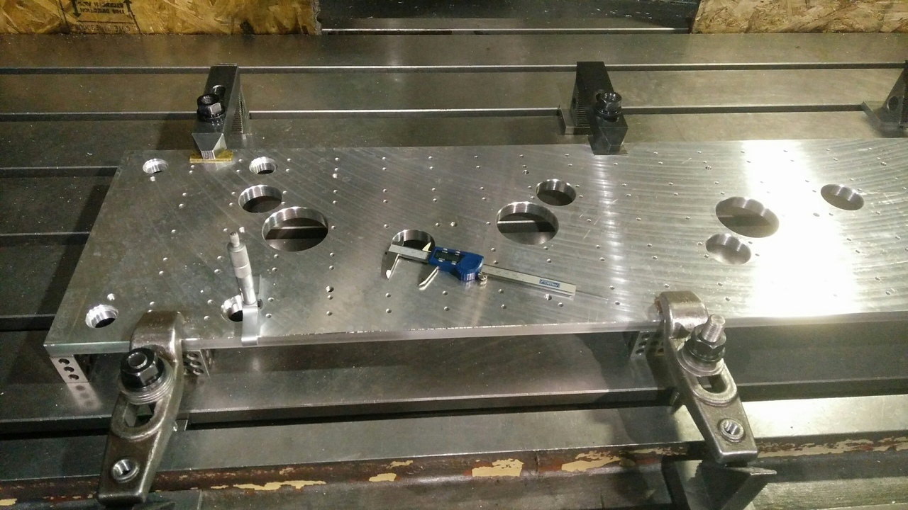 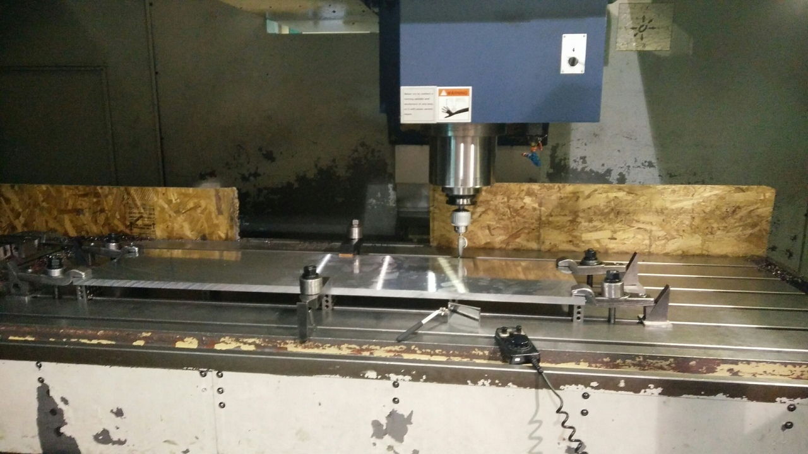
CNC Programming at Holman Exhibits
•Here you can see products that we were made during my employment at Holman Exhibits. All parts were machined to tight tolerances
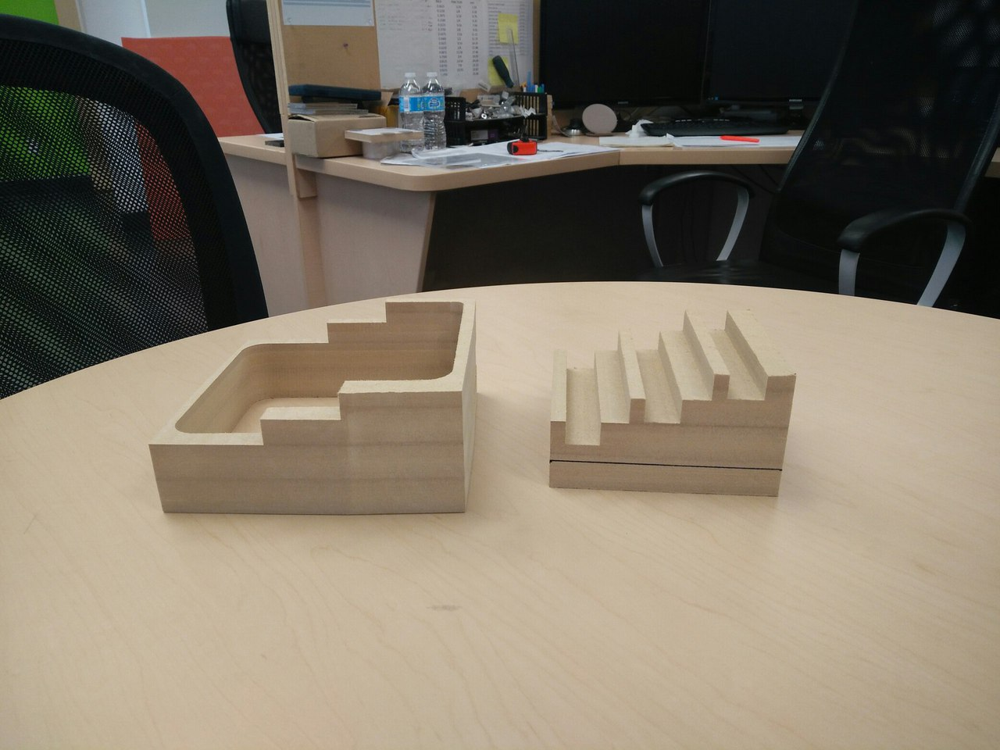 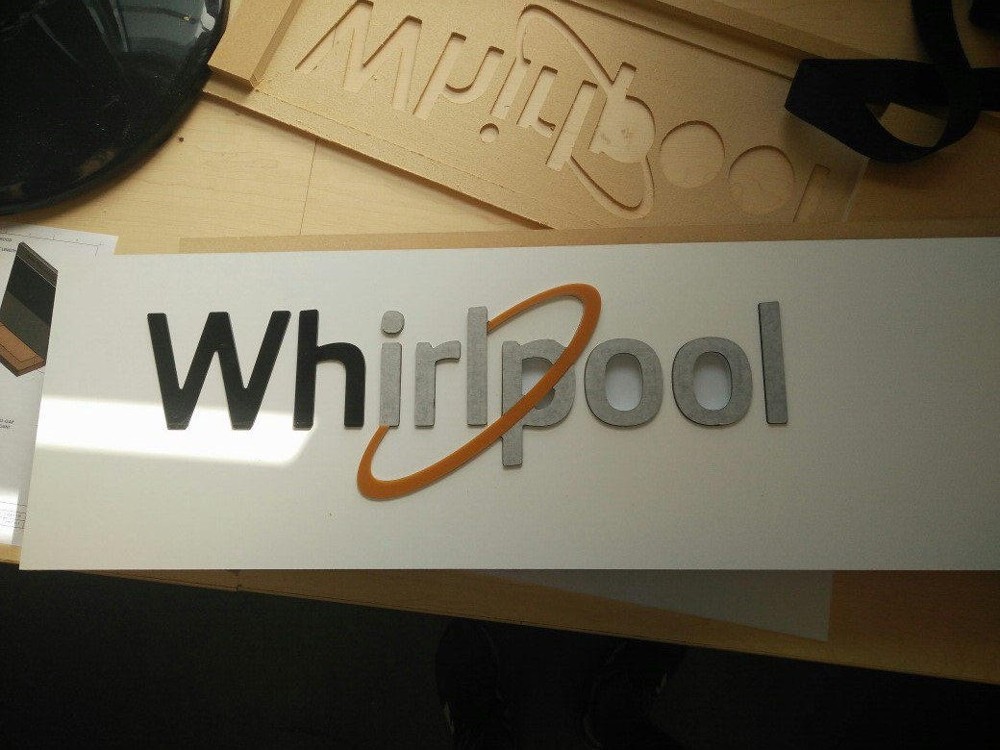
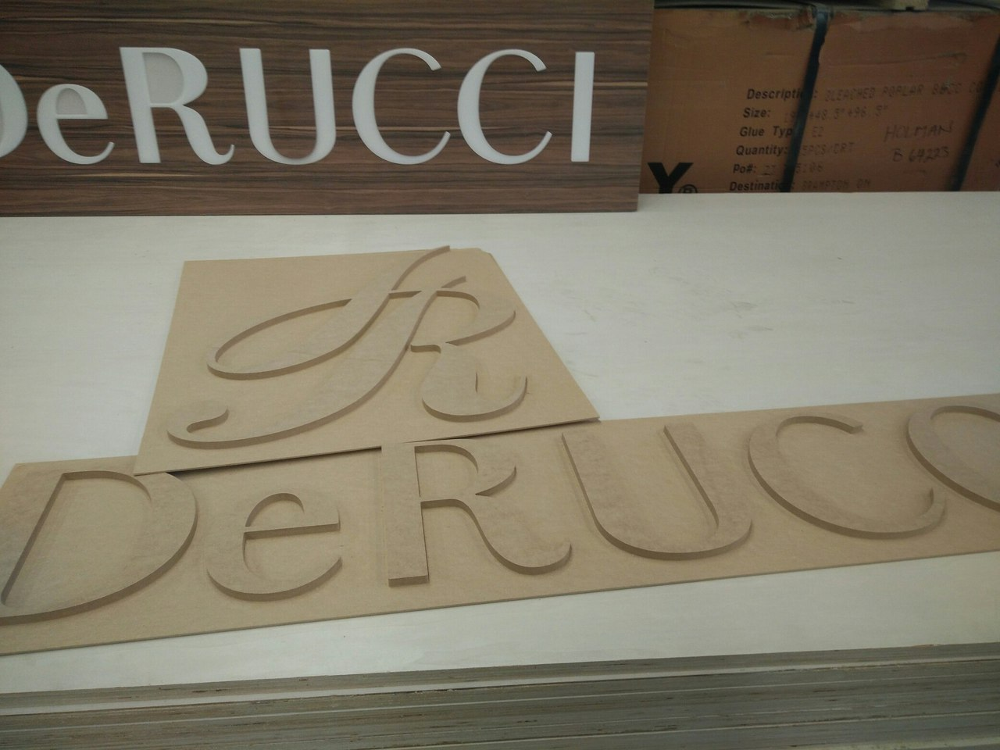 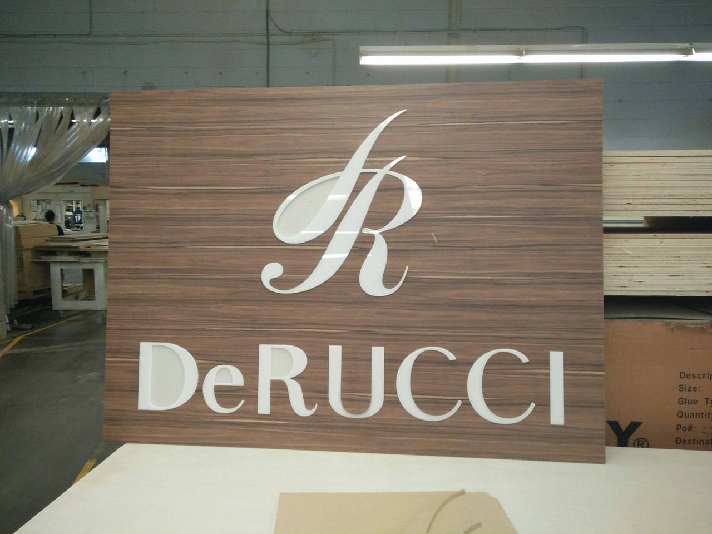
Electromechanical Spirograph
6-th Semester Capstone Project
•Designed the Electromechanical Spirograph from scratch
•Applied existing knowledge of working with Mechanical Design, Sheet Metal, Frame building and Outsourcing components
•Refreshed his hands-on approach working in the Machine Shop
Aluminum Mold for Nanuk 910 case
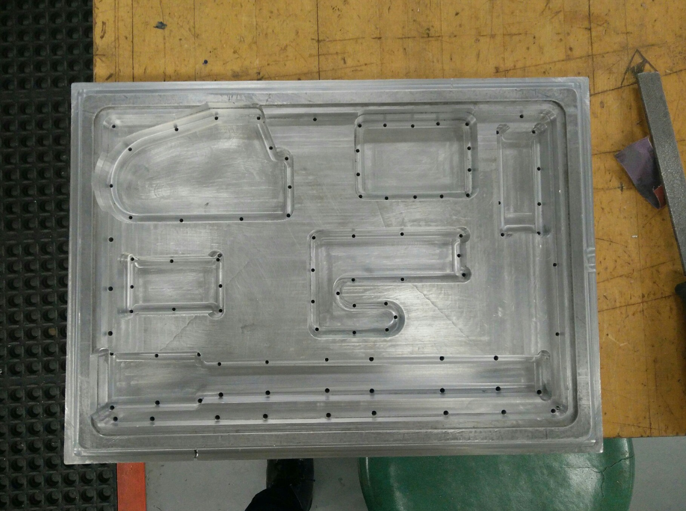 
•Designed the Mold to fit electronic components for SunPillar company
•Prototyped the Mold on the CNC machine using the MDF
•Had to apply enchancements to the existing concepts due to a change of a design of the electrical components
Power Train Transmission
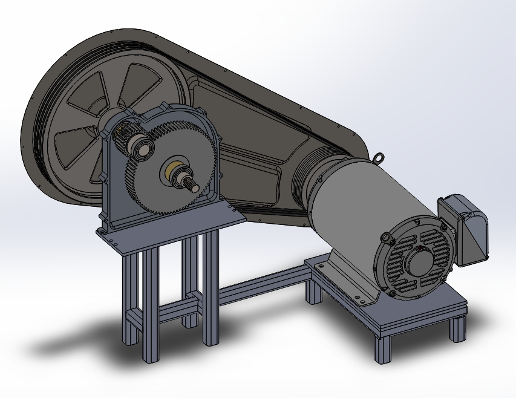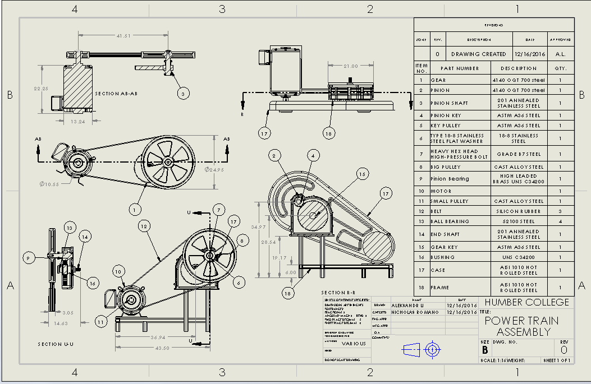
5th Semester Projec3t
•Created the Excel spreadsheet with engineering calculations
•Impemented all data for modelling and produced 2d drawings
•Obtained in-depth knowledge about engineering terms related to gears
Peroxide Rocket Project
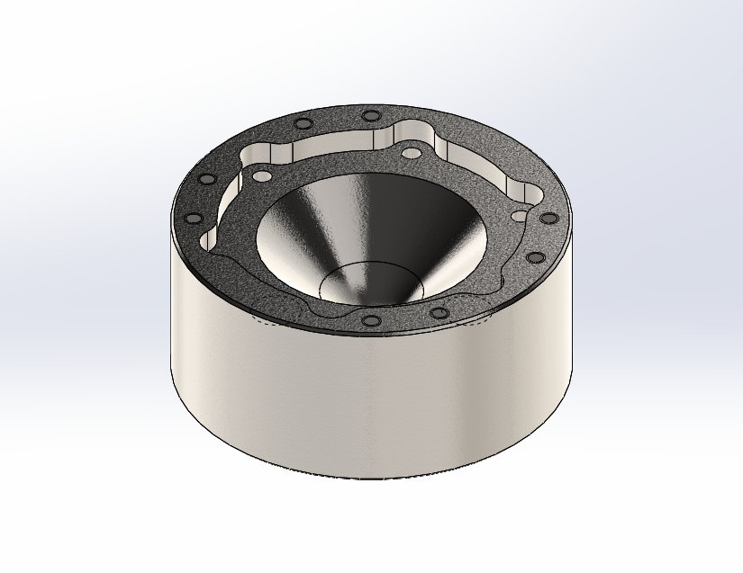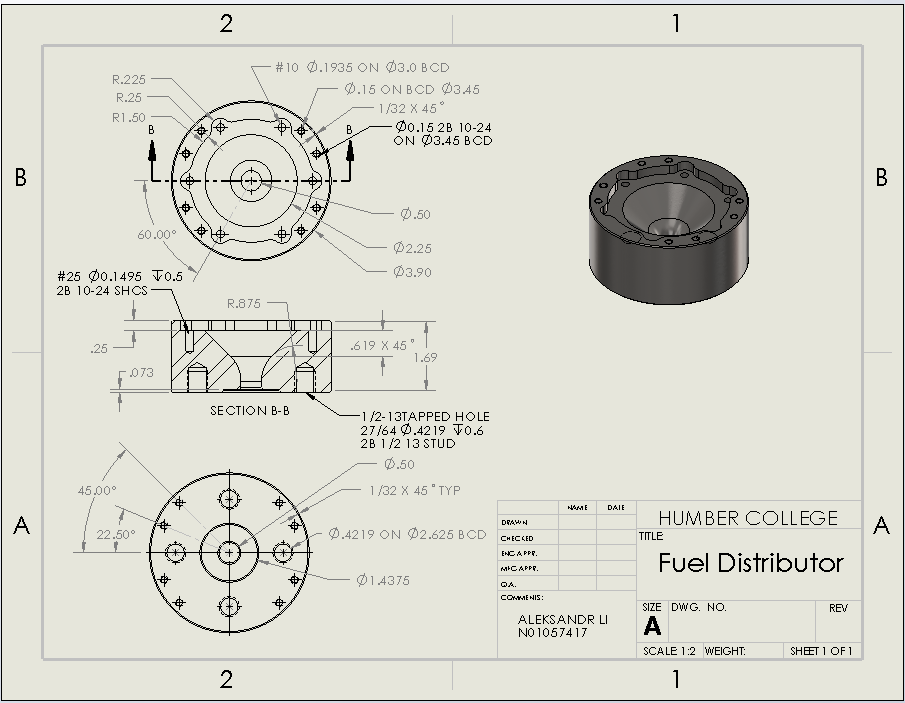
Engineering Club Project
•Designed the Fuel Distributor by collaborating with professors
•Produced the Process Plan for Manufacturing
•Contributed to the project development by assisting other team members
CNC cutting project
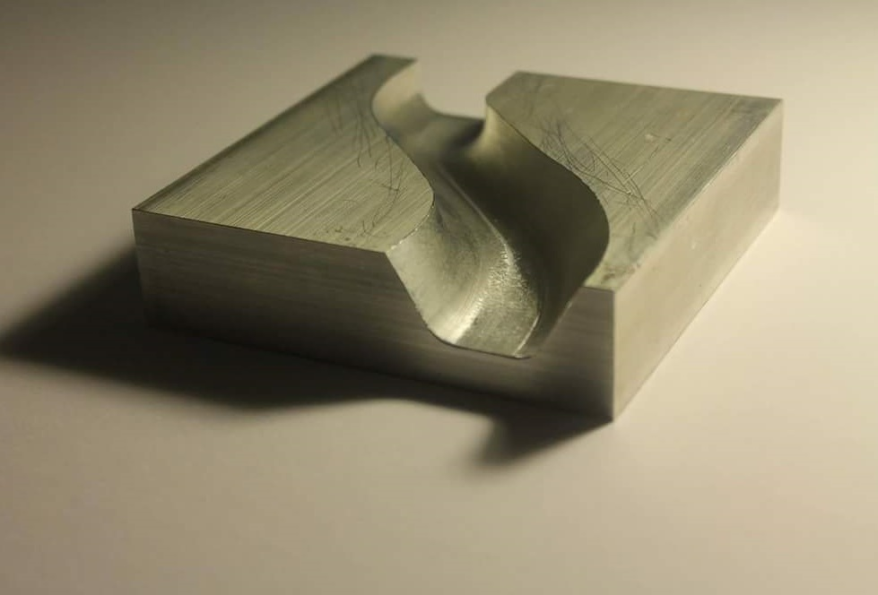 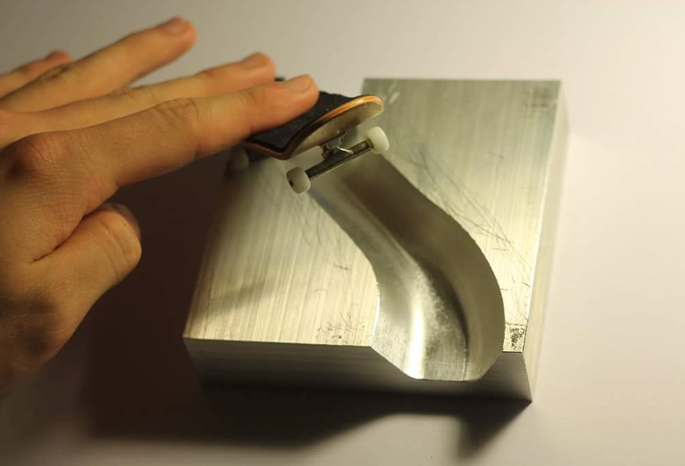
4th Semester Project
•Created the model using AutoCAD software
•Made a CNC program using MasterCam X9 software
•Operated the HAAS VF-3 CNC machine to cut the part
Machine Shop Project
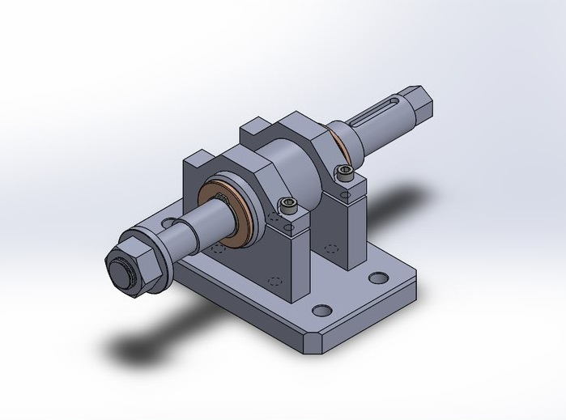 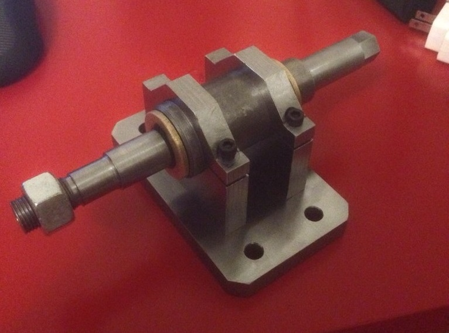
2nd Semester Project
•Operated manual lathe and milling machine to cut various parts
•Used various tools to achieve the final assembly
•Learned different techiques operating the machines